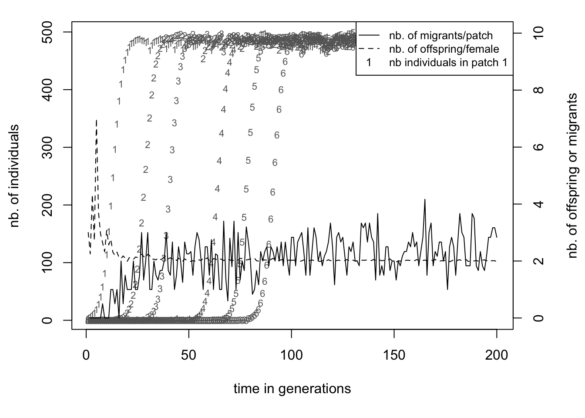
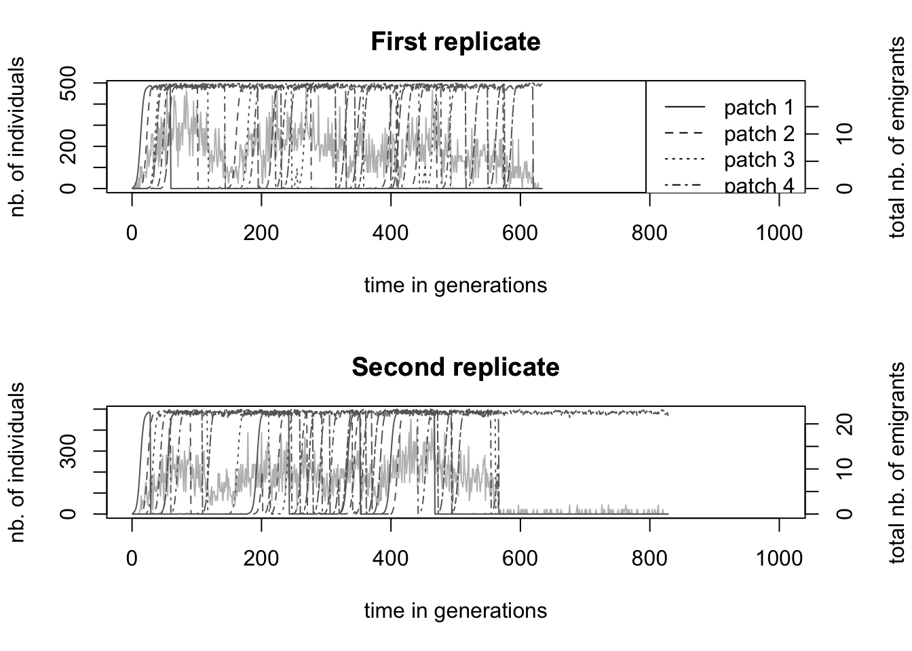

1 1 — title: “Demography” date: “20 novembre 2017” — ##Some first notes Welcome to the quantiNEMO tutorial series. quantiNEMO is a software that allows you to simulate populations of individuals with genotypes, phenotypes, migration, selection and much more. It is an incredibly exhaustive software that allows the simulation of an extreme diverse array of biological scenarios, both forwards and backwards in time (see the different vignettes on this website for some examples). However, the basics of quantiNEMO are very simple. The following four tutorials will demonstrate the some of the functionality of quantiNEMO, giving you the basic skills that will allow you to later build your own more complex scenarios. Though the manual provides all information you would need to successfully use quantiNEMO, you will not need to read it yet. These tutorials will give you a head start. You will see that throughout these tutorials we do refer so specific sections in the manual if you would like to know more about certain functionality of the quantiNEMO software. During the tutorial, quantiNEMO will often be abbreviated as ???qN???. Moreover, the produced files will often have names that are different from the ones within this tutorial (because they have names with dates etc.). Therefore, we will often simply refer to the variable part of a name as ???xxx??? (e.g. xxx.txt).
This tutorial was written to work with quantiNEMO version 2.0. Though most of the tutorial should work fine under other versions, it might differ in some, important, details such as parameter encoding.
We recommend you not to copy-past sample code from this tutorial into a setup file, since this can often introduce ???hidden??? errors, but instead retype the text (the mastering of any art starts by copying it). However, all setup files (files ending with .ini) described and used during these tutorials can be downloaded from this website directly . Furthermore, many of the visualisations and analyses after the simulations have been performed in the statistical software package R. Though some of the first plotting exercises can be performed in Excel, data manipulations later in this tutorial require the aid of the more flexible environment of R. Because the scope here is not to explain the workings of R (there are excellent online tutorials for those), we do go into too much detail and instead provide readymade R-scripts here . However, we recommend those who do know R to first try reading and analysing the data yourself.
0 Getting started
QuantiNEMO is freely distributed and can be easily downloaded from the internet, for example here . Several versions exists, including the source code, but we need an executable version. Make sure you download the version suitable for your operating system (Linux, Mac or Windows). After downloading, see the section corresponding to your operating system for your first instructions.
0. 1 Basic usage on a Windows machine
The file you downloaded is still compressed as a zip-file. Unzip it to a location where you would like qN to run. Inside the folder, you will find three items: the manual (a pdf-file), the application (or ???executable??? ending on .exe), and a setup file named ???quanitNemo.ini???. N.B. It may be that your version of windows does not show the extension (.exe .pdf) of all items. If you want to change that, got to Control Panel > Appearance and Personalization > Folder Options; go to the ???View??? tab; under ???Advanced settings??? untick ???Hide extensions for known file types??? and click OK. This tutorial will often refer to certain sections in the manual so it will be good to keep at hand. The executable is the actual program. Double click it. A black command prompt window will have opened which shows some text on screen including with on the bottom ???replicate 1/1??? with a timer and a fraction of hundred counting up (see figure below). image: Once the counter reaches 100, the window will disappear again. The simulation has functioned perfectly, but at times the immediate disappearance of the prompt can be inconvenient when you want to read e.g. error messages. There is a trick to keep the prompt open by not launching quantiNemo.exe directly, but via the command prompt: Right-click in the folder with the qN executable (but on an icon), go to New > Shortcut. Type instead of a file path ???cmd.exe???, click ???Next??? and then ???Finish???. A new short has appeared in your folder. Right-click this shortcut and go to ???Properties???. In the Properties window, change the ???Start in??? path to the path where your current folder with the qN-files reside and click OK. image: When you now click the cmd.exe shortcut, a command prompt opens with as a top line the path of your current folder (the qN folder). If you want to launch qN just type quantiNemo.exe image:
When you press enter, qN will launch itself again, just as before. The big difference, however, is that the prompt stays open after finishing! You may have noticed that while running qN twice, two new folders have appeared within the qN folder, both whose names start with ???simulation_?????? You may delete these two folders for now. Lastly, when you launch qN, it will automatically look for the setup file named ???quantiNemo.ini???. We do not want this to happen during our tutorials. Therfore, as a last preparation before getting started, rename the ???quantiNemo.ini??? file (e.g. as ???quantiNemoExample.ini???).
0.2 Basic usage on a MAC
Drag and extract the downloaded ???quantinemo_mac.zip??? file to a location where you would like qN to run. Inside your qN folder, you will find three items: the manual (the pdf-file), a setup file named ???quanitNemo.ini??? and the application (or executable) itself, with no extension. This tutorial will often refer to certain sections in the manual so it will be good to keep it at hand. The setup file we will ignore for the moment. The executable ???quanitNemo??? is the actual program. To launch it double click the executable or launch it within a terminal session by executing the following command: ./quantiNemo.
0.3 Basic usage in Linux
Drag and extract the downloaded ???quantinemo_linux.zip??? file to a location where you would like qN to run. Inside your qN folder, you will find three items: the manual (the pdf-file), a setup file named ???quanitNemo.ini??? and the application (or executable) itself, with no extension. This tutorial will often refer to certain sections in the manual so it will be good to keep it at hand. The setup file we will ignore for the moment. The executable ???quanitNemo??? is the actual program. To launch it double click the executable or launch it within a terminal session by executing the following command: ./quantiNemo.
1 Demographics
This first tutorial/vignette will show the basic population dynamics as they happen in quantiNEMO (qN).
1. 1 A first simulation of a growing population
Let???s start with a basic setup file. Open notepad (or your personal favourite plain text editor) and type the text below into it (copying it directly can often give silly errors):
# A simple illustration of demography in quantiNEMO generations 20
patch_capacity 1000
patch_ini_size 4
mating_nb_offspring_model 3 # 3 = fecundity
mean_fecundity 1.5
regulation_model_adults 1 # 1 = yes; 0 = no (default)
stat {adlt.nbInd}
What does this text mean? The first line, starting with ???#??? is a comment. You can write anything you like behind a #, it will be ignored by qN, but can be very handy for yourself to understand your file. All other elements in this file are the names of parameters of the model with behind them their values. These parameters function like switches. If our qN simulation is like a machine, the parameters are the buttons with which you tell it what to do. However, unlike many machines, you cannot change the settings while it is running; you have to ???push??? the right buttons before you start the machine. We do this using a setup file. In it you can switch certain parameters on or off (by changing the value to 1 or 0 resp.), or you can provide the parameter with the value you want it to be (like setting the right temperature on your oven). However, for all parameters except two, qN has a default value (you can find the defaults in the manual). This means that there is a lot we do not need to tell qN for it to work properly, it will set the appropriate ???default- parameters automatically. The setup file above will tell qN all it needs to know for our first simulation.
generations specifies how long we want our simulation to run. Time in these simulations is always expressed in number of generations (instead of days/years) so that running a simulation on turtles will take as long as a simulation on bacteria. patch_capacity specifies the carrying capacity of our site (i.e. the maximal number of individuals this site can support a.k.a. ???K??? in many mathematical formulas). These two parameters are the only two that need to be specified for qN to work. However, we will make our simulation a bit more interesting and change a few of the other parameters as well.
Instead of starting our simulation with a population at its maximum size (the carrying capacity), we will tell qN using patch_ini_size how many individuals our population consists of at the start of our simulation (4 in this case). mating_nb_offspring_model allows us to choose how we would like the population to grow. Several options exist in qN (see Section 3. 1 ???Breeding??? in the manual ), but here we choose option 2, which means that for each generation qN lets each female have on average x offspring, where x is defined by the parameter mean_fecundity. Generations are non-overlapping in qN, this fecundity therefore specifies the lifetime reproductive success of each female in the population. Since by default each individual is hermaphrodite (and therefore also female), a fecundity of 1.5 will mean our population multiplies by 1.5 each generation, and therefore grows exponentially. If we do not want our population to grow beyond the carrying capacity of the site, we have to tell qN to ???trim??? any excess individuals from the population over the carrying capacity, which we do by setting regulation_model_adults to 1. Lastly, behind stat we define the output we would like qN to save from this simulation; in this case we are only asking it to save the number of adults in each generation.
Now we will save this file as ???Demo1.ini???, put it in the same folder as the quantiNemo executable and run the executable. The programme will ask you:
Please enter the settings file name (or ???exit??? to terminate quantiNEMO):
Type Demo1.ini (or the name you gave your setup-file, including any extensions) and press enter. The simulation will run now and should take less than a second. N.B. Make sure your file is not saved as ???Demo1.ini.txt???; some text editors will automatically add the ???.txt??? extension if not told otherwise. N.B. If qN does not ask you to enter the settings file name, but immediately starts the simulation, it is because you still have a file in your qN folder named ???quantiNemo.ini???, which qN automatically runs. To prevent this from happening, rename this file. At the end of the simulation a new folder should have appeared in the folder containing qN carrying the same name as the setup file (in our case ???Demo1???) followed by the date and time you started the simulation. In this folder you will find five files. Open simulation_stats.txt and ignore the other files for the moment. The top of the file will look like this:
replicate
generation
adlt.nbInd
1
1
4
1
2
6
1
3
9
1
4
14
1
5
21
1
6
32
1
7
48
1
8
72
1
9
108
1
10
162
1
11
243
1
12
365
1
13
548
1
14
822
1
15
1000
Since we only performed one replicate, all entries in the replicate column say 1. If we would have done more replicates the other replicates would have appeared below the last entry line of this replicate. The second column is the generation number, which goes from 1, the first, to 50, our last generation. By default, qN will save the requested statistics each generation. Finally, the last column tells us the number of adult individuals present at that generation of our simulation. As we specified, the first generation has only four individuals. These four individuals had a fecundity of 1.5, meaning that (\(4*1.5= 6\)) offspring are being produced. Because in qN generations are non-overlapping, generation 2 consists of these six individuals only (and not 4 old + 6 new = 10 individuals). We see that over generations the number of individuals increases rapidly, roughly following the exponential curve \(4 * 1.5^x\). However, since we cannot have half an individual, qN rounds up the number of individuals. From generation 15 onwards we see that the population stops growing exponentially and stays at 1000 individuals. This is exactly the carrying capacity we specified in our setup file. However, if we had not told qN to regulate the population size, qN would have ignored this and the population would have continued growing to approximately 1.7 billion individuals (!) making this simulation extremely memory-demanding.
Question: What parameter did we use to prevent our population to grow to 1.7 billion individuals?
Question: Would there be another way of obtaining the same results as above in qN without using this parameter? (Have a look in the manual at the mating_nb_offspring_model options.)
1.2 A second growth model
Instead of specifying a fixed fecundity for females, we could have also made the number of offspring negatively dependent on the current population density, making it grow logistically. In the Demo1.ini file, change mating_nb_offspring_model to 4, logistic regulation. Instead of the mean fecundity, we now need to specify growth_rate (we???ll set this as well to 1.5). Because logistically growing populations will grow asymptotically towards carrying capacity, we can set regulation_model_adults to 0, or leave it out of our setup file altogether, since qN has by default no population size trimming.
Lastly, we can ask qN to also save the average fecundity of females as a statistic. Under a regime of density dependency, fecundity will change over time; it might be interesting to follow this. To do this, add fem.meanFec between the {} behind adlt.nbInd (separate the terms with a space, not comma). In fact, qN can create and save hundreds of different statistics for you. The list of available keywords for each statistic can be found in the ???Summary statistics??? section, found at the end of several chapters of the manual. The statistics used in Tutorial 1 all come from the Summary statistics section of the Metapopulation chapter in the manual.
Your new file should look like this:
# A simple illustration of logistic growth in quantiNEMO generations 20 patch_capacity 1000 patch_ini_size 4 mating_nb_offspring_model 6 # 6 = logistic regulation growth_rate 1.5 stat {adlt.nbInd fem.meanFec}
Resave this file as Demo2.ini and run it in qN. Again a new ???Demo2__
Here we clearly see the difference in behaviour between mating_nb_offspring_model at what time carrying capacity is reached: when growth is determined by female fecundity (as in section 1.1), growth is exponential until it is ruthlessly cut-off once it reaches 1000 individuals. When growth is determined by logistic regulation (this section), the population shows density dependent growth: fast when few individuals are around, but gently slowing down as it approaches carrying capacity.
# Select the simulation_stats.txt file from Demo1 (the fecundity simulation)
demo1<-read.table("demography/exponential/simulation_stats.txt", header=T)
# Select the simulation_stats.txt file from Demo2 (the logistic growth simulation)
demo2<-read.table("demography/logistic/simulation_stats.txt", header=T)
# plotting the dataplot(demo1$generation,demo1$adlt.nbInd, xlim=c(0,20), xlab="generations",ylab="nb. of individuals", type='l', lty=2, lwd=2)
lines(demo2$generation,demo2$adlt.nbInd, pch=2, lty=3, lwd=2)
legend("topleft", c("Fecundity", "Logistic growth"), lty=c(2,3), lwd=2, cex=0.8, title="mating_nb_offspring_model")
Question: Above we plotted the number of individuals over time. How would the fecundity over time look for the two different scenarios? Produce this plot.
1.3 Colonisation
Of course most populations are not isolated. When a site is getting full, individuals will start migrating to other populations which are not yet at carrying capacity. Or they might colonize new sites. Here we will simulate such a scenario. As an example, we will take the linear colonization of the Hawaii Island chain by humans.
As a basis for our new simulation, we will use the Demo2.ini file. We will have to add a new parameter stating that we want more than one patch (i.e. island). By default patch_number is set to 1, so we did not need to mention it specifically in our setup file up until now. However, now that we want to have 6 patches, we need to tell qN to use this parameter. Next we define how these patches are spatially connected to each other using dispersal_model. Several options exist, but we will use option 2, the 1D-Stepping Stone model which places the patches on a line and allows our migrants only to move one island forward or one island back. (Confusingly we will not use one of the Island models.) The last question concerning topography is what we will do with the borders of our map. What happens to migrants that hop to the west of our most western island? By default, qN assumes the world is circular, meaning that migrant will end up on the most eastern patch. Though that is true for Earth as a whole, it is less so on Hawaii. If we instead set dispersal_border_model to 2, the borders ???absorb??? our adventurous migrants, never to be seen again.
For our current scenario, we will decide that all Hawaiian Islands are equal i.e. the carrying capacity of each patch is equal (in reality these islands differ considerably in size): let???s consider 500 individuals per island the maximum. Since qN will automatically take the value behind a parameter and apply it everywhere unless instructed otherwise, we only need to write ???500??? after patch_capacity once. By contrast, patch_ini_size should be different for the different patches. If we would leave it like this, all of our uninhabited patches would start with 4 individuals already present! Luckily, we can tell qN that we want different values for our different patches by putting our required values in {} separated by spaces (no commas!). This is called a ???vector???.
patch_ini_size {4 0 0 0 0 0} Here we tell qN that the initial population size of our first patch is 4, and that our patches 2 ??? 6 all have an initial size of 0. Instead of repeating the ???0??? five times, we can use a shorthand: rep.
patch_ini_size {4 rep(0, 5) } The above line means exactly the same to qN as the previous line with all the zeros. We just told it to repeat the ???0??? five times and thus could potentially save us some typing. (See the manual section 2.4 ???Macros??? for more examples.) For migration to occur, we need to give a migration rate. We will set dispersal_rate to 0.005, meaning that on average 0.5% of a patch???s population will emigrate. (N.B. If you provide dispersal_rate with a value larger than 1, qN will interpret it as the absolute number of migrants!) Now we are almost finished. But since we said we were modelling the colonization by humans, we will change our hermaphrodites into dioecious creatures by setting mating_system to 3, and reduce their growth_rate to 0.5 Lastly, we add some new output statistics to our setup file: adlt.nbInd_p and emigrants. Your final setup file should look something like this: > # A scenario for a sequential colonization event > generations 200 > patch_number 6 > dispersal_model 2 # 2 = 1D Stepping-Stone model > dispersal_border_model 2 # 2 = Absorbing border model > patch_capacity 500 > patch_ini_size {4 rep(0,5)} # = {4 0 0 0 0 0} > > mating_system 3 # 3 = dioecious random mating > mating_nb_offspring_model 6 # 6 = logistic growth > growth_rate 0.5 > dispersal_rate 0.005 > regulation_model_adults 1 # 1 = yes > folder demography/colonisation2 > stat {adlt.nbInd emigrants fem.meanFec adlt.nbInd_p}
Run the file (we named it colonisation.ini). Compared to the simulation_stats.txt file of the previous section, we see seven new columns. One new column shows the average number of emigrants per patch. The other six of new columns show the population sizes of each of our patches. Again, we plot our data using R (you can use the included script).
A single patch grows in size following the same curve as in section 1.2, which was expected. But before patch 1 has reached carrying capacity (the ???1???s in the plot), patch 2 has been colonized and the population there starts growing (the ???2???s). This is because the population on patch 1 already starts producing emigrants after a few generations as can be seen by the continuous line. The number of emigrants per inhabited patch levels around 2.5, exactly the value we would expect based on our parameter settings. This makes the colonization quite a regular process, even with only half a percent of emigrants each generation the whole archipelago will be fully populated after around 120 generations. However, your simulation might not look exactly the same as shown in the graph above. The exact time point at which each island is being colonized is not fixed, but dependent on random events. Migration rate determines the probability that an individual will leave its current patch. Since it is a probability, the actual number of migrants is subject to chance. Moreover, for a successful colonisation to take place, we need both a male and a female coloniser to reach the same island at the same time! Therefore, when running the simulation multiple times, the timing of events would not be same between replicates. The next section will look more into these stochastic processes of quantiNemo.
# Select the simulation_stats.txt file from the colonization simulation
colony<-read.table("demography/colonisation1/simulation_stats.txt", header=T)
# plotting the population sizespar(mar=c(5,4,1,4)+0.3)
plot(colony$generation, colony$adlt.nbInd_p1, pch='1', cex=0.7, col="grey40", xlab="time in generations", ylab="nb. of individuals")
for(i in2:6) points(colony$generation, colony[,5+i], pch=as.character(i), cex=0.7, col="grey40")
# plotting the number of migrants and the mean fecunditypar(new =TRUE)
plot(colony$generation, colony$emigrants, type ="l", lwd=1, ylim=c(0,10), axes =FALSE, bty ="n", xlab ="", ylab ="")
axis(side=4)
lines(colony$generation, colony$fem.meanFec, lty=2, lwd=1)
mtext("nb. of offspring or migrants", side=4, line=3)
# make a legend here!legend("topright", c("nb. of migrants/patch", "nb. of offspring/female", "nb individuals in patch 1"), bg="white", cex=0.8, lty=c(1,2,NA), pch=c(NA,NA,"1"))

1.4 Colonization-Extinction equilibrium
In our previous example populations could grow without problems or risks. However, often disaster can strike, wiping out a complete populations. If no lasting damage was done to the habitat, nearby populations could afterwards recolonize the empty patch. But migration needs to be frequent enough for the metapopulation to persist. In this section we will look at the interplay between extinction and recolonization by migration. Understanding what level of disturbance a species can still tolerate without going extinct is very important for successful conservation strategies.
We will stay in the same scenario as before, studying the colonization of the Hawaiian Islands. However, to add a level of complexity, we will not study actively migrating humans, but instead think about a passive disperser, such as a small insect. It is dependent on the prevailing winds and ocean currents (going east-west around Hawaii) for its migration. For our current scenario we would therefore need a sort of asymmetrical stepping-stone dispersal model, allowing migration in mainly one direction (west). qN does not provide such a ready-made scenario. However, it does allow us to define a different dispersal rate from each patch to each other patch. Instead of a single dispersal rate value, we will provide qN with a matrix of values, containing the specific dispersal rate from each patch to each patch. Have a look at the setup file below.
> # Finding a colonization-extinction equilibrium > generations 1000 > patch_number 6 > dispersal_rate {{0.9946 0.0050 0.0001 0.0001 0.0001 0.0001} > {0.0001 0.9946 0.0050 0.0001 0.0001 0.0001} > {0.0001 0.0001 0.9946 0.0050 0.0001 0.0001} > {0.0001 0.0001 0.0001 0.9946 0.0050 0.0001} > {0.0001 0.0001 0.0001 0.0001 0.9946 0.0050} > {0.0001 0.0001 0.0001 0.0001 0.0001 0.9995}} > patch_capacity 500 > patch_ini_size {4 rep(0,5)}mating_system 3 # 3 = dioecious random mating; 0 = hermaphrodite random mating (default) > mating_nb_offspring_model 6 # 6 = logistic growth > growth_rate 0.5 > regulation_model_adults 1 # 1= yes, 0 = no regulation > extinction_rate 0.01 > stat {adlt.nbPops adlt.nbInd emigrants adlt.nbInd_p} > replicates 20 > folder demography/colonisation2 > seed 42
The matrix can almost be considered a vector of vectors (indicated by the {}). Each row contains the dispersal rates of a single patch to all the patches in the model. The first value of the matrix therefore specifies the probability of individuals of patch 1 that will ???disperse??? to patch 1 (i.e. stay where they are). The second value indicates the probability of individuals of patch 1 that will disperse to patch 2. The third value from the top row is the dispersal rate from patch 1 to patch 3 etc. etc. Two things should be noted though. First the diagonal of the matrix is the probability that an individual will stay in its patch. Secondly, because total probability should be unity, each row should sum up to one. (Question: why is this not true for each column?) From our current dispersal rate matrix we can read that the large majority of individuals will stay in their current patch (the high values in the diagonal). The value right behind the diagonal (0.005) is the probability to disperse to the next patch and corresponds with our dispersal rate value from the previous example. However, this value is only behind the diagonal, not in front of it. This makes dispersal asymmetric in our current scenario: the probability to migrate to the next patch (the island to the west) is much higher than to the previous patch (the island to the east), symbolising the prevailing ocean currents. However, we see that dispersal to any of the other patches is not null. A tiny probability exists for an insect, either as an adult or as an egg, to end up on any of the other islands, e.g. by animal transportation.
The remainder of the setup file is based on the colonisation.ini file with some slight modifications. By now you should be able to see and understand most adjustments yourself. The big addition compared to the last section is the introduction of extinction_rate. This gives the probability per patch per generation of going extinct i.e. all individuals will be removed from that patch symbolising an epidemic outbreak or volcano eruption.
The other big difference is the addition of replicates and seed. As with real world experiments, it is always a good idea to repeat an experiment multiple times to see if a particular outcome is robust. This is especially true for any simulation with a lot of stochasticity. The previous simulation already had stochasticity introduced in the form of dispersal probability. The current model, however, will be much more sensitive through the probability of extinction of a complete subpopulation. This could change the outcome of the simulation so heavily, that it is advisable to perform multiple replicates.
Question: Generally in science, when comparing findings, one wants to know if these are ???significant??? by using some statistical test or other. When using computer simulations, statistical tests are hardly ever used. Why do you think that is so?
The last parameter seed is also linked to the stochasticity of the simulation. Ironically enough, a computer has a hard time producing random numbers. It always needs some input to transmutate into something ???random???. Normally a program will use the current data-time to transmogrify, but you can also provide it with a ???seed??? from which it will start producing random numbers. Once it has its first random number produced, it can use that to produce consecutive random numbers. Seed allows us to reuse exactly the same stochasticity. This is practical when you would like to reproduce a specific outcome you once found, or when different people need to have exactly the same stochastic outcome. Hence by defining the seed at 42 we will now make sure that you will get the same outcome as shown in this tutorial. Question: Why are your model outcomes exactly the same when you run a setup file twice with the same seed, but not when you run two replicates within one setup file using seed?
Save this file and run it. On the screen you will now see that qN runs the simulation, one replicate after the other. It also shows you at what generation the current replicate is at and if the population went extinct before the end of the simulation. We see that in replicate 1 the entire population went extinct at generation 805, but that replicate 2 made it to the end of the simulation. What happened there? We can open the simulation_stats.txt file to look into the details of the simulations. The first 1000 lines of this file are the data of the first replicate, the lines 1001-2000 are the data of the second replicate etc., as indicated by the number in the column ???replicate???. We can scroll through this data file of course, but it is easier to visualise what is going on using R.
# Select the simulation_stats.txt file from the extinction simulation
extinct<-read.table("demography/colonisation2/simulation_stats.txt", header=T)
# extract the data of replicate 1 and 2
rep1<-extinct[extinct$replicate==1,]
rep2<-extinct[extinct$replicate==2,]
# define a function to plot the data (saves typing)
plot.extinction<-function(mat, tit=""){
par(mar=c(5,4,3,4)+0.1)
total.migrants<-mat$emigrants *mat$adlt.nbPops
plot(mat$generation, total.migrants, type="l", main=tit,lwd=1, col="grey", axes=FALSE, xlab="", ylab="")
axis(4)
par(new=TRUE)
plot(mat$generation,mat$adlt.nbInd_p1,main=tit, type="l",lty=1, col="grey40", xlab="time in generations", ylab="nb. of individuals")
for(i in2:6) lines(mat$generation, mat[,5+i], lty=i, col="grey40")
#plot(mat$generation,mat$colonisers, axes=FALSE, xlab="", ylab="", ylim=c(0,10))#points(mat$generation,mat$emigrants,pch=4)mtext("total nb. of emigrants",side=4, line=3)
#for(i in 2:6) points(mat$generation, mat[,5+i], cex=0.7, pch=as.character(i), lty=1+i, col="grey40")
}
# plot the data of replicate 1 and 2par(mfrow=c(2,1))
plot.extinction(rep1, tit="First replicate")
legend("topright", paste("patch",1:6), lty=1:6)
plot.extinction(rep2, tit="Second replicate")

# select the simulation_mean.txt file
mean.ext<-read.table("demography/colonisation2/simulation_mean.txt", h=T)
# plotting the number of inhabited patches and alive replicates across time par(mar=c(5,4,1,4)+0.1, mfrow=c(1,1))
plot(mean.ext$generation, mean.ext$alive.rpl,ylim=c(0,20), type="l",lty=1, lwd=2,col="grey", xlab="time in generations", ylab="", axes=FALSE)
axis(4)
mtext("alive replicates", side=4, line=3)
par(new=TRUE)
plot(mean.ext$generation, mean.ext$adlt.nbPops, type="l", lty=1, lwd=1, xlab="", ylab="inhabited patches")
These figures show the population size of each patch over time (dark lines), with the total number of emigrants as a grey line in the background. The second replicate seems to have more extinction events (indicated by vertically dropping lines) than the first, despite having the same extinction rate or, indeed, identical starting conditions. The question now is why the first replicate went extinct when the second one made it until generation 1000. The problems start for the first replicate when patch 1 goes extinct at generation 342. Remember that migrating one patch further is easier than migration one patch back. It is therefore the previous patch that has the main responsibility for recolonisation. But patch 1 does not have a previous patch, so the chance of patch 1 being recolonized is very low. Once the population on patch 1 is extinct, a domino effect might start. Patch 2 goes extinct at generation 355 (almost simultaneously with patch 5, which recovers quickly) and cannot be recolonized easily, since patch 1 was already extinct. Moreover, as the number of populations reduces (and with it the total number of individuals), the total number of emigrants drops, reducing the chance of colonisation even further. In the first replicate we can very clearly see that the patches go extinct in order, ending with patch 6 which survived 200 generations al alone but could not provide enough colonisers for the other patches. During the second replicate, patch 1 goes extinct 3 times (around ~generation 20, 100 and 580), but twice had the luck that many migrants were around to recolonise it. After its last extinction, it is not being recolonised any more.
Here we analysed the order of events in two specific cases, but perhaps we can find some patterns across the data. We could use R to extract more data from our sheet, but luckily qN already has the average values of each statistic across all our simulations. Open the file simulation_mean.txt and you will see the same columns as in the simulation_stats.txt file, but now they contain the average values across simulations (hence the column ???replicate??? is missing). So we see for example that at generation 6 the total population size in our simulation was on average 27.95 individuals across replicates. Moreover, we have a column extra: alive.rpl shows how many of our 20 replicates are still ???alive???, meaning still have individuals in them. This is important information, because all the values are averages across alive replicates only. See for example the graph below.
Even as the number of alive replicates drops, because all patches in those replicates went extinct, the average number of inhabited patches remains stable around 4.5. This is the effect of averages being calculated across alive replicates only, in this case seven replicates at generation 1000. The average number of inhabited patches across all simulation would have been ( 74.5 + 130 ) / 20 = 1.575 inhabited patches. What we can learn from this graph however, is that simulations that survived were not on the brink of extinction, but quite healthy with at least 4 patches inhabited. Instead of number of patches, we could also look at how the total population size varies over time. Moreover, it would be good to see how the population size varies across replicates. qN automatically also calculates the variance around each mean, found in the simulation_var.txt file. Using the data from both the simulation_mean.txt and simulation_var.txt file we can plot the population trend among the simulation replicates plus/minus one standard deviation (do not forget to take the square root of the simulation_var.txt values):
What we can conclude from this is that extinction seems to be a dichotomous process in our simulations. Either the population is healthy with many individuals across several patches, or the population is completely extinct. But across replicates we do not see any obvious pattern of steady decline to extinction. The power of such a simulation model is that we could now start studying the influence certain parameters have on the behaviour of such populations? How does the carrying capacity influence extinction risk? How strong is the effect of fecundity? Are hermaphrodites less sensitive to extinction than dioecious species? By varying certain parameters and rerunning the simulation in many replicates, we can create predictions of population demographic behaviour, something which would be very difficult to do in vivo. Question: Rerun the extinction.ini setup file with a different value for seed and reproduce the graphs above. Do they look very different from the ones above? Which ones have changed less with the changing of the seed and which ones more? Why? What if you would run your setup file twice with different seeds, but with a 1000 replicates. Which graphs do you expect to be very similar and which ones still very different between the two runs?
 Once the counter reaches 100, the window will disappear again. The simulation has functioned perfectly, but at times the immediate disappearance of the prompt can be inconvenient when you want to read e.g. error messages. There is a trick to keep the prompt open by not launching quantiNemo.exe directly, but via the command prompt: Right-click in the folder with the qN executable (but on an icon), go to New > Shortcut. Type instead of a file path ???cmd.exe???, click ???Next??? and then ???Finish???. A new short has appeared in your folder. Right-click this shortcut and go to ???Properties???. In the Properties window, change the ???Start in??? path to the path where your current folder with the qN-files reside and click OK. image:
Once the counter reaches 100, the window will disappear again. The simulation has functioned perfectly, but at times the immediate disappearance of the prompt can be inconvenient when you want to read e.g. error messages. There is a trick to keep the prompt open by not launching quantiNemo.exe directly, but via the command prompt: Right-click in the folder with the qN executable (but on an icon), go to New > Shortcut. Type instead of a file path ???cmd.exe???, click ???Next??? and then ???Finish???. A new short has appeared in your folder. Right-click this shortcut and go to ???Properties???. In the Properties window, change the ???Start in??? path to the path where your current folder with the qN-files reside and click OK. image:  When you now click the cmd.exe shortcut, a command prompt opens with as a top line the path of your current folder (the qN folder). If you want to launch qN just type quantiNemo.exe image:
When you now click the cmd.exe shortcut, a command prompt opens with as a top line the path of your current folder (the qN folder). If you want to launch qN just type quantiNemo.exe image: